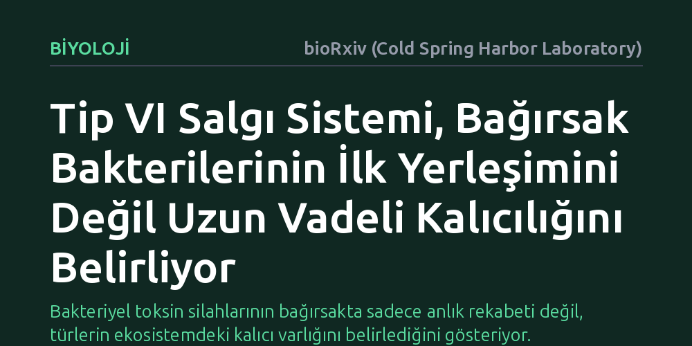

BIYOLOJI · bioRxiv (Cold Spring Harbor Laboratory) · 2026-10-07
Araştırmacılar, yabani farelerin bağırsak mikrobiyomunda bakterilerin birbirini hedef aldığı Tip VI salgı sisteminin işlevini inceledi. Bulgular, bu sistemin bakterilerin bağırsağa ilk yerleşimini etkilemediğini, ancak Bacteroides acidifaciens türünün toplulukta uzun vadeli kalıcılığını sağladığını gösterdi.
Bakteriyel toksin silahlarının bağırsakta sadece anlık rekabeti değil, türlerin ekosistemdeki kalıcı varlığını belirlediğini gösteriyor.

Memelilerin bağırsaklarında trilyonlarca bakteri son derece yoğun bir alanda bir arada yaşar. Bu mikroorganizmalar yalnızca besin kaynakları için yarışmaz; aynı zamanda komşularını saf dışı bırakmak için temas temelli moleküler silahlar kullanır. Tip VI salgı sistemi (T6SS) adı verilen mekanizma, bir bakterinin komşu hücreye doğrudan toksin enjekte etmesini sağlayan biyolojik bir fırlatıcıdır. Laboratuvardaki yapay kültürlerde bu mekanizmanın komşu bakterileri öldürdüğü bilinse de, doğal yollarla evrimleşmiş karmaşık bir bağırsak mikrobiyomunda tam olarak ne işe yaradığı bugüne kadar netleşmemişti.
Bağırsak mikrobiyomunun dengesi konak canlının sağlığı için temel bir unsurdur. Ancak hangi bakteri suşlarının bağırsakta kalıcı olacağını, hangilerinin ise zamanla yok olacağını belirleyen ekolojik kuralları henüz tam olarak çözebilmiş değiliz. Bakterilerin silah taşıması, onların doğal bir toplulukta her koşulda üstün geleceği anlamına mı gelir, yoksa bu avantaj sadece belirli koşullarla mı sınırlıdır? Bu soru, mikrobiyomu hedefleyen tedavilerin ve probiyotik uygulamalarının geleceği açısından kritik bir önem taşır.
Araştırmacılar, laboratuvar ortamında yetiştirilmiş yapay fare toplulukları yerine, doğadaki gerçek rekabeti yansıtan yabani farelerden elde edilmiş 'WildR' mikrobiyom modelini kullandı. Bu doğal ve karmaşık ekosistemde Bacteroidales grubuna ait bakterilerin davranışlarını doğrudan gözlemleyebilmek amacıyla yeni genetik araçlar geliştirdiler.
Çalışma ekibi, topluluk içindeki Bacteroides acidifaciens bakterisinin Tip VI salgı sistemini işlevsiz hale getirerek veya bu sistemi taşıyan genetik blokları diğer türlere aktararak suş değişimi stratejisini uyguladı. Ayrıca 'ICE-seq' adı verilen hedefe yönelik özel bir dizileme yöntemi kullanarak, bu silah sistemini taşıyan genetik paketlerin topluluktaki türler arasında nasıl ve ne sıklıkla el değiştirdiğini haritalandırdı.
Deney sonuçları, Tip VI salgı sisteminin işlevine dair çok net bir ayrımı ortaya çıkardı. B. acidifaciens bakterisinde bu silah sistemi devre dışı bırakıldığında, bakterinin bağırsağa ilk yerleşme kapasitesi hiçbir zarar görmedi. Ancak haftalar süren takipte, silahını kaybeden suşun topluluk içindeki varlığını koruyamadığı ve zamanla popülasyonunun tükendiği görüldü. Yani bu sistem bir kapı açıcı değil, mevziyi uzun vadede koruma aracıydı.
İkinci önemli bulgu ise bu genetik silahın paylaşım dinamikleriyle ilgiliydi. Sistemin, bakteriler arasında aktarılabilen hareketli bir DNA parçası üzerinde bulunduğu ve yabani mikrobiyomdaki türler arasında yakın zamanda yatay olarak aktarıldığı saptandı. İlginç bir şekilde, bu genetik paket Phocaeicola vulgatus bakterisine aktarıldığında hayvana ilk başta geçici bir yerleşim avantajı sağlasa da, uzun vadede bu yeni taşıyıcı türün popülasyonunda gerilemeye yol açtı.
Bu bulgular, bakteriyel silah sistemlerinin sağladığı avantajların mutlak olmadığını, tamamen ekolojik bağlama bağımlı olduğunu kanıtlıyor. Bir mikroorganizmanın komşularını zehirleyebilme yeteneği, içinde bulunduğu topluluğun fizyolojisi ve türler arası dengeler elvermediğinde uzun vadede bir ekolojik yüke dönüşebiliyor.
Sonuç olarak, bağırsak mikrobiyomunu koruyucu bakterilerle desteklemeyi hedefleyen gelecekteki biyolojik mühendislik çalışmalarında, yalnızca tek tek genlere değil, o genlerin karmaşık topluluk içindeki maliyetine ve uzun vadeli sürdürülebilirliğine odaklanılması gerektiği anlaşılıyor.